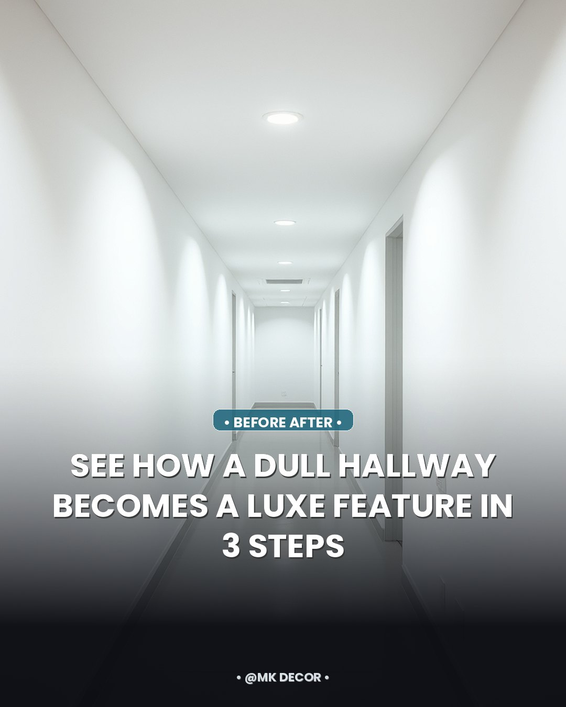

MK DECOR
5596 followers · @mkdecor_wallpaper_ahmedabad · website
🎯 Recommended campaign
Objective: awareness · Who: general · Trigger: aspiration
Problem: Finding educational décor that makes learning spaces inspiring
Angle: Curiosity wall
Angle 'Curiosity wall' scored 42/100, strongest on claim safety and producibility. It beat 'Learning space makeover' (39) by 4 points.
Next step for viewers: follow the page for design ideas
- 5596 followers (sweet spot)
- active: 12 recent posts
- low engagement rate (0.42%) — needs content help
- sells directly (5 buying signals in captions)
- has website (full profile available)
- visual product category (ads show results quickly)
- has social handle
From Blank Hallway to Luxe Feature Wall · Storytelling · 58/100

Develop a single‑image post for the First‑Time Home Buyer persona (22‑35, Ahmedabad). The image must show a stark before‑and‑after comparison of a hallway, using a split‑screen layout that is visually striking without any overlaid text. The left side displays the bland, white‑wall hallway; the right side reveals the same space after applying a bold vertical‑stripe wallpaper, subtle LED accent lighting, and a small decorative runner rug. The caption follows a before‑after hook, lists three concrete design steps, and ends with a CTA inviting DMs with "AD" for a free spec concept. Use the brand’s educational tone and include eight hashtags mixing hyper‑niche, industry, and broad discovery tags. This post targets saves and profile visits by offering a clear, replicable makeover blueprint. Visual deliverable: create exactly one finished static image, with the complete composition in a single frame.